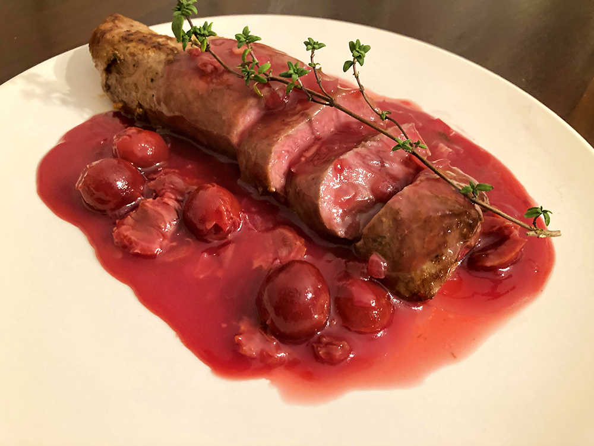

varkenshaas in kriek
Ideaal voor de kerstdagen.

Bereidingsduur: 50 minuten
Aantal personen: 2
Ingrediënten:
500 gram varkenshaas
3 plakjes brie
250 milliliter kriek
1 ui
175 gram kersen in kersensap
4 takjes tijm
80 gram boter
30 gram bloem
500 gram varkenshaas
3 plakjes brie
250 milliliter kriek
1 ui
175 gram kersen in kersensap
4 takjes tijm
80 gram boter
30 gram bloem
Instructies:
1. Pak een vergiet en laat de kersen uitlekken. Vang hierbij het siroop op. Snijd de ui in snippers, verhit 45 g boter in een steelpan en fruit de ui. Voeg na enkele minuten de bloem toe, roer goed door en laat dit 5 minuten op een laag pitje garen tot een roux.
2. Roer met een garde en voeg de blaadjes van 2 takjes tijm, het bier, de kersen en kersensiroop toe aan de roux. Laat op laag vuur 20 minuten inkoken tot de saus de gewenste dikte heeft.
3. Snijd ondertussen 3 plakjes brie en snijd de varkenshazen in de lengte totdat deze bijna doormidden zijn. Leg de plakjes brie hierin en bestrooi de binnenkant met de blaadjes van 2 takjes tijm, peper en zout. Hecht het vlees dicht met sateprikkertjes zodat de brie er niet tussenuit kan. Bestrooi de varkenshaas met peper en eventueel zout.
4. Verhit 35 g boter in een grote pan op hoog vuur en bak het vlees in enkele minuten rondom bruin. Zet het vuur laag, haal de prikkertjes eruit en bak de varkenshaas in nog eens 10 minuten tot deze nog een beetje roze van binnen is. Keer het vlees regelmatig en zorg dat de brie er niet uitloopt.
5. Snijd de varkenshaas in plakjes en schep de kersensaus erover. Serveer met aardappels.
1. Pak een vergiet en laat de kersen uitlekken. Vang hierbij het siroop op. Snijd de ui in snippers, verhit 45 g boter in een steelpan en fruit de ui. Voeg na enkele minuten de bloem toe, roer goed door en laat dit 5 minuten op een laag pitje garen tot een roux.
2. Roer met een garde en voeg de blaadjes van 2 takjes tijm, het bier, de kersen en kersensiroop toe aan de roux. Laat op laag vuur 20 minuten inkoken tot de saus de gewenste dikte heeft.
3. Snijd ondertussen 3 plakjes brie en snijd de varkenshazen in de lengte totdat deze bijna doormidden zijn. Leg de plakjes brie hierin en bestrooi de binnenkant met de blaadjes van 2 takjes tijm, peper en zout. Hecht het vlees dicht met sateprikkertjes zodat de brie er niet tussenuit kan. Bestrooi de varkenshaas met peper en eventueel zout.
4. Verhit 35 g boter in een grote pan op hoog vuur en bak het vlees in enkele minuten rondom bruin. Zet het vuur laag, haal de prikkertjes eruit en bak de varkenshaas in nog eens 10 minuten tot deze nog een beetje roze van binnen is. Keer het vlees regelmatig en zorg dat de brie er niet uitloopt.
5. Snijd de varkenshaas in plakjes en schep de kersensaus erover. Serveer met aardappels.